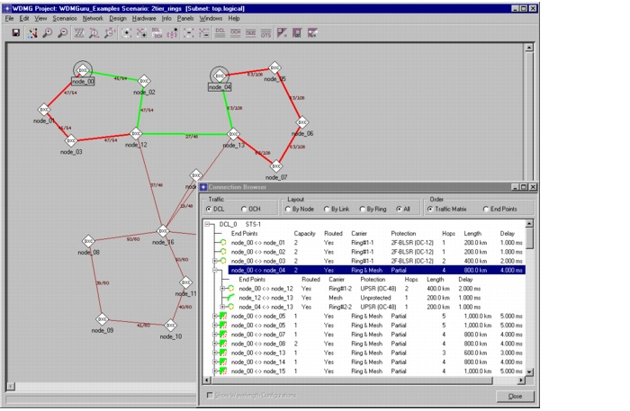

Ring Design > Evaluating Results > Viewing Ring Paths in the Connection Browser
Viewing Ring Paths in the Connection Browser
You can inspect the paths of a connection using the Connection Browser (Network > Connection Browser). The Routed column shows per-connection routing information:
- Yes for routed connections. A routed connection has a full end-to-end path that can consist of multiple sub-paths over a combination of ring and mesh portions of the network.
- No for unrouted connections, which have no paths assigned to them
- Partial for connections that are partly established. A partial connection has an incomplete path (because the part on rings is routed but the part on the mesh is not).
The Carrier column shows the part of the network on which the connection is routed: Ring, Mesh, or Ring & Mesh.
When you select a connection in this browser, SP Guru Transport Planner highlights its path in the network topology. For a connection on a UPSR, SP Guru Transport Planner highlights the working path in green and protection path in red. For a connection on a BLSR, SP Guru Transport Planner highlights the working path only because there is no explicit protection path.
To examine these sub-paths in the Connection Browser, left-click on the `+' sign next to the connection to see detailed information. You can view the number of hops, whether the sub-path is routed on a particular ring or on the mesh, and the protection scheme applied to the subconnection.
The Connection Browser also has a By Ring view which enables you to inspect the connections that are routed over a particular ring.
For more information about this browser, see Connection Browser.
Figure 12-16 Connection Browser Indicating Paths over Rings and Mesh

| Home © 1987-2007 OPNET Technologies, Inc. All Rights Reserved. This software may be covered by one or more U.S. Patents. See complete patent notice in the Legal Notices section. OPNET Support Center |